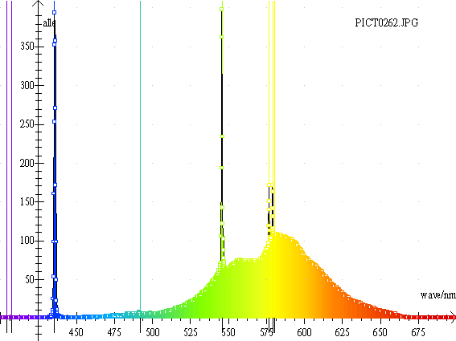
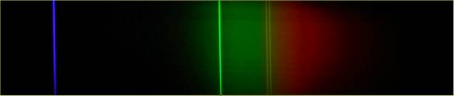
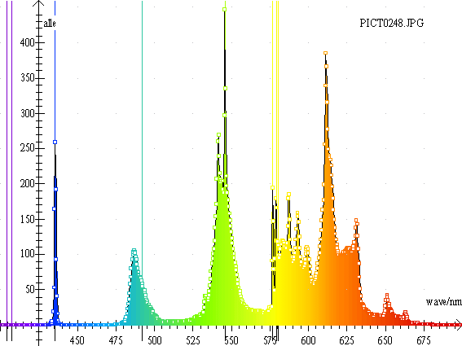
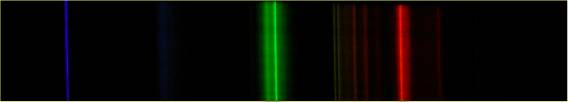
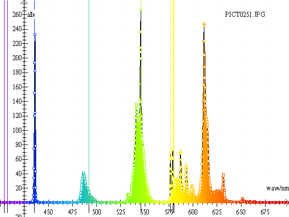
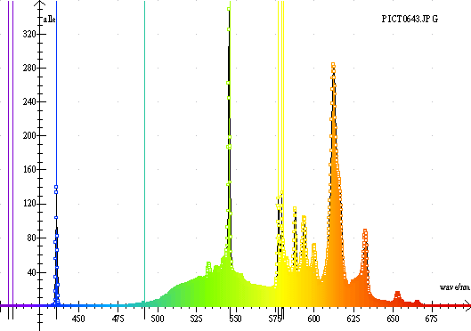
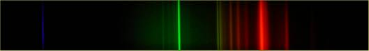
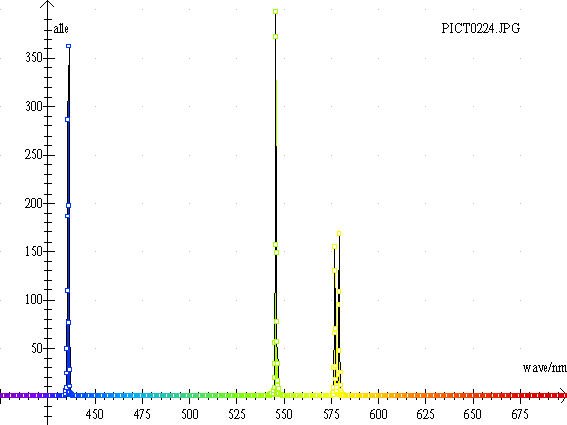
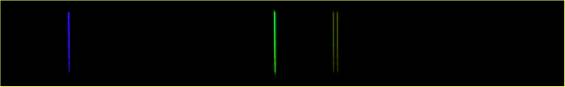
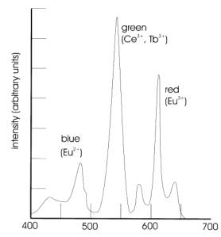

En sparepære indeholder en kviksølv gas. De ultraviolette Hg-linier 254og 364 nm se ikke i spektret. Men de er alligevel betydningsfulde, idet de absorberes af triphosphor eller halophospor belægninger på pærens inderside. Disse belægninger udsender så et synligt »spektrum«. Dette spektrum kan være mere eller mindre kontinuert. I nedenstående spektre ses de karakteristiske kviksølvlinier: 435,8 nm, 546,1 nm, 577,0 nm og 579,0 nm. Den første pære er gul-orange. De to andre hvide. Men hvad er hvid?
Det er godt nok, at spare. Budskabet 75 Watt ® 15 Watt er vist gået ind, men man skal anstrenge sine øjne mere. Øjnene anvender alle farverne i lyset til at se dybde og skarphed. Derfor er lyset fra en sparepære dårligere. Desuden gengiver lysstofrør og energisparepærer farvenuancer dårligere end glødepærer. Se »God elektrisk belysning« af Asger Bay Christensen og Carsten Edmund.
Oplysninger om lyskilders farvegengivelsesindeks (Ra-tal) kan fx findes på www.nesa.dk.
Spektrene er optaget med et Minolta Dimage G500 kamera og et gitter med 15000 linier pr tomme dvs. ca. 590 linier pr mm.


Denne sparepære har et lidt orange-rødt skær. Kun få procent af lyset udsendes som et liniespektrum. Spektret er forbavsende kontinuert.


Sparepæren er indkapslet som en almindelig rund pære. Men det snyder. Spektret er opdelt i 4 områder. Det er en pære af god kvalitet: Mærke: Luxtek Supreme Quality.

Denne sparepære er af ringere kvalitet – lavere Ra-tal.


Dette er Sylvania Pastel, farve: rose. Lyset er behageligt
orange.


Der knytter sig indviklet kemi og hemmelighedskræmmeri til det hvide pulver i en sparepære, men grundtrækkene er følgende:
Pæren indeholder en ædelgas (fx argon) ved lavt tryk og en dråbe kviksølv. Når lampen tændes fordamper lidt kviksølv. Under elektronbombardement eksiteres Hg atomerne. De eksiterede Hg atomer henfalder igen og udsender en masse ultraviolet lys med en bølgelængde på 254 nm og nogle synlige bølgelængder. Omdannelsen af det ultraviolette lys til synligt lys sker i phosphorbelægningen på rørets inderside.
Halophosphat
Den mest brugte grundmasse er calciumfluorophosphat, Ca5F(PO4)3. Når denne grundmasse tilsættes Sb3+ ioner som aktivator udsendes blåt lys. Sb3+ har nemlig et absorptionsbånd ved 254 nm, som matcher det ultraviolette Hg lys. Men det udsendte lys er blåt og koldt. (omkring 480 nm) Tilsættes også Mn2+ som coaktivator fås et varmere orange-rødt lys (omkring 580 nm). Lampens lystone varieres ved at ændre forholdet mellem de tilsatte mængder af Sb og Mn. Tilsætningen af Mn2+ til Ca5F(PO4)3 er uproblematisk, idet Mn2+ kan erstatte Ca2+. Tilsætningen af Sb3+ kræver tilsætning af endnu et grundstof, fx F- eller Cl-, således at ladningsbalancen er opretholdt.
Tilsætningsstofferne omdanner ikke bare det ultraviolette lys til synligt lys. Hg-spektret er et liniespektrum, men det udsendte lys er delvist kontinuert. Hvis overgangen i tilsætningsstoffet er afskærmet af krystalgitteret i grundmassen, fås et smalt bånd. Vekselvirker elektronen i overgangen stærkt med krystalgitteret, fås et bredt bånd.
Triphosphater
I disse pulvere tilsættes sjældne jordarter og med en blanding af flere pulvere dannes blåt, grønt og rødt lys med bølgelængder nær øjets tre farvesanser. Eu3+ i Y2O3 giver rødt lys (612 nm), Tb3+ i CeMgAl11O19 giver grønt lys og Eu2+ i BaMgAl10O17 giver blåt lys.
Uden de sjældne jordarter kunne man ikke have lavet sparepærer. Den højere temperatur i en sparepære sammenlignet med et lysstofrør nedbryder halophosphaterne. Da de sjældne jordarter er dyre, går man på kompromis mellem kvalitet og pris og benytter en dobbeltbelægning af halophosphater og triphosphater. Triphosphatlaget er beskyttet af halophosphatlaget.
Tilsættes 4 eller 5 phosphater fås en endnu bedre farveværdi end for en triphosphatlampe.
|
Eksempel på en trikromatisk lampe, der udsender en blanding af lige dele blåt, grønt og rødt lys og derfor synes hvid. Prøv at finde den orange linie fra Eu3+ ved 612 nm i sparepærespektrene. |
 |
Se artikel i LMFK-bladet af Mads Hammerich